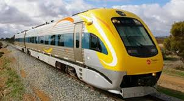

Train
A train is a form of rail transport consisting of a series of connected vehicles that generally runs along a rail track to transport cargo or passengers. Motive power is provided by a separate locomotive or individual motors in self-propelled multiple unit. Although historically steam propulsion dominated, the most common modern forms are diesel and electric locomotives, the latter supplied by overhead wires or additional rails. Other energy sources include horses, engine or water-driven rope or wire winch, gravity, pneumatics, gas turbines and batteries. Train tracks usually consist of two running rails, sometimes supplemented by additional rails such as electric conducting rails and rack rails, with a limited number of monorails and maglev guideways in the mix.
There are various types of trains that are designed for particular purposes. The first trains were rope-hauled, gravity powered or pulled by horses. From the early 19th century almost all were powered by steam locomotives. From the 1910s onwards the steam locomotives began to be replaced by less labor-intensive and cleaner (but more complex and expensive) diesel locomotives and electric locomotives, while at about the same time self-propelled multiple unit vehicles of either power system became much more common in passenger service.